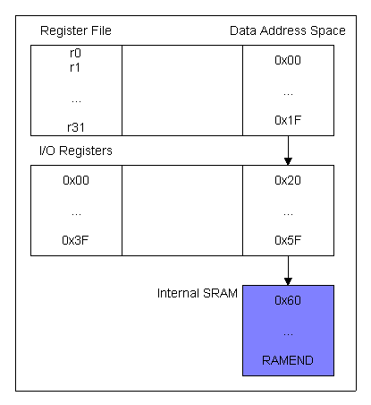

SRAM
The SRAM is the actual AVR memory. While the registers are used to perform calculations, the SRAM is used to store data during runtime. In small projects, all variables can be kept in the registers and things are more easy. In order to use SRAM effectively, you need to know some things about the AVR address space, the assembler directives and instructions operating on SRAM.
All memory locations can be reached by either direct or indirect addressing. Direct addressing is simpler, so I'll explain it first.
When storing data to/loading data from a direct address you know exactly where the data is stored. When using address 0x60 to store a byte value (lets call it "hour"), you can use the sts and lds instructions to handle that data:
lds r16, hour
That's pretty simple. r16 is loaded with the SRAM contents at address 0x60. Same procedure for sts:
sts hour, r16
Indirect addressing is done similarly to using pointers in C or pascal: The Index Register Pairs (r26:r27 are called X, r28:r29 Y and r30:r31 Z) can be used to point at the AVR address space. If X (r26:r27) holds the value 0x60, it will point to "hour" and can be used to handle that value. This is what the indirect addressing instructions are made for:
| ldi XL, 0x60 ldi XH, 0x00 ld r16, X |
; load r26 (XL) with low(0x60) ; load r27 (XH) with high(0x60) ; load r16 with value from X, which points to 0x60 |
Indirect loading of a register is pretty useless without indirect storing, so there's also a store instruction which is used just like sts but with X, Y or Z instead of a direct address. It's called st.
It's now time to explain the address space a bit more detailed before proceeding with more advanced load/store instructions.
The AVR address space consists of 3 major regions: The register file (r0..r31), I/O registers (Timers, UART and so on) and internal SRAM. Here is a diagram showing how it's organised:
In this diagram you can see why the first SRAM address is 0x60. The AVR registers and I/O registers are also located in the data space and occupy the low addresses. This has an advantage: You can access the I/O registers via the index register pairs X, Y, and Z as well. The only thing to remember is that the I/O addresses you can use with In and out don't work in this case, as in and out work with 0x00 to 0x3F (see left column). In this case you must use 0x20 to 0x5F instead (see Address Space column). The working registers can also be accessed using indirect addressing. The code below demonstrates the difference between addressing I/O registers indirectly and writing to them using out.
| ldi XL, 0x3B ldi XH, 0x00 lds r16, X out 0x1B, r16 |
;load X with PortA data ;space address ;load r16 with PortA value ;write r16 to PortA |
I hope this could clarifiy the difference...
In the diagram you see "RAMEND" at the end of the internal SRAM space. This value varies between the different AVRs, as they all have different SRAM sizes. External SRAM can also be connected to some of them. The External SRAM data space begins at RAMEND + 1.
The advanced SRAM instructions are very useful when it comes to handling strings or in any other case when data is stored one element after the other (arrays, structures....). In this case, we can just tell the AVR to not only handle data, but also to manipulate the index register that was used:
This means that r16 is is stored at the address X is pointing to. Then X is incremented by 1. It's also possible to use pre-decrementing (st -X, r16).
Flash
Flash is organised in words of 2 bytes. All instructions need one ore more words of it, never single bytes. That's no problem we have to care about.
But what if we wanted to used a lookup table in Flash? Here's an example of such a lookup table:
| string: .db "Hello!", 0 |
; the table's label (which can be used as an address) ; the table: A null-terminated string (Hello!) |
The assembler will store the table in Flash. This will use up 4 words: 6 characters + 0 zero. That 7 bytes. The last one will be padded with another zero so that only whole words are used. 8 bytes. For getting the BYTE address of the table, it's address has to be multiplied with 2. Let's load the table's address into the inde register pair Z:
| ldi ZL, low(2*string) ldi ZH, high(2*string) string: .db "Hello!", 0 |
; load low reg with low byte of the address*2 ; load high reg with high byte of the address*2 ; ; the table's label (which can be used as an address) ; the table: A null-terminated string (Hello!) |